bubble
Home
About NAPRO
References
Temperature Indepedent Table
Property Table
Figure

Enter Temperature (K)
Submit
send
Clear
autorenew
Temperature Independent Properties
Value
Units
Principal
Reference #
Melting Point
370.90
K
Ohse et al 1985
Boiling Point
1154.7
K
Fink, Leibowitz 1995
Critical Temperature
2503.7
K
Fink, Leibowitz 1995
Thermodynamic
Transport
Value
Units
Function
Principal
Reference #
Graphs